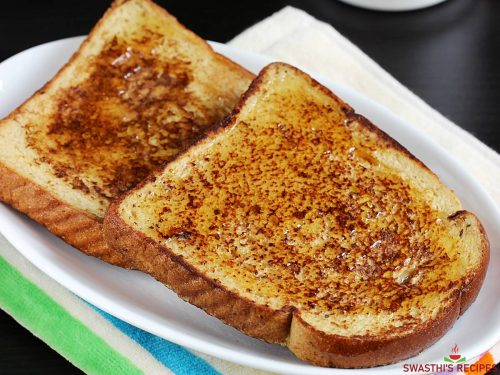

French Toast

Description
Start your day with the tempting smell of French toast. Serves 6
Ingredients
- 2 eggs
- 1 and a half cups of milk
- 1 teaspoon vanilla extract
- 1 and a half teaspoons of ground cinnamon
- 1 quarter teaspon of ground allspice
- 1 pinch salt
- 6 (1 inch thick) slices of French bread
- 1 tablespoon butter, or as needed
Steps
- Preheat oven to 400 degrees F (200 degrees C).
- Whisk eggs, milk, vanilla extract, cinnamon, allspice, and salt together in a large bowl. Place bread slices in egg mixture and soak, turning to coat, until bread is completely saturated.
- Melt butter in a cast-iron skillet over medium heat. Working in batches, cook bread in hot butter until golden, about 3 minutes per side. Transfer toasted bread to a baking sheet.
- Bake toast in the oven until outside is crisp and slightly puffed, 12 to 15 minutes.
Return home